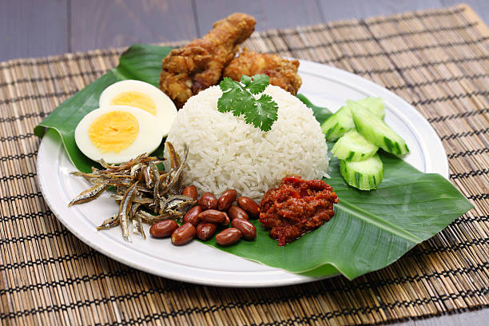

Home
Nasi Lemak

Description
Nasi lemak is the national dish of Malaysia, celebrated for its masterful balance of flavours. This creamy, comforting meal acts as the perfect canvas for the bold and fiery accompaniments that define it.
The dish is traditionally served with a large amount of sambal, a spicy chili paste alongside classic crunchy sides like fried anchovies, toasted peanuts, and hard-boiled or fried eggs. Nasi lemak is enjoyed for breakfast, lunch, and dinner.
Ingredients
- 2 1/2 cups jasmine rice
- 7 ounces coconut milk
- 2 pandan leaves, cut crosswise into 2-inch pieces
- 25 g fresh peeled ginger, julienned
- 1 1/2 teaspooms kosher salt
- Fried anchovies, any amount
- Sliced hard-boiled eggs, any amount
- Fried peanuts, any amount
- Sliced cucumber, any amount
- Sambal, any amount
- Fresh or frozen banana leaves, for serving
Instructions
- Set up a tiered steamer, filling the bottom section wiht about 3 inches of water. Bring to a boil over high heat. Line the stea,er tier with cheesecloth.
- Meanwhile, place the rice in a strainer and rinse the grains under running water until the water is clear. Drain rice, then transfer to a 10-inch nonstick skillet and add the coconut milk, 200mL water, pandan leaves, ginger, and salt. Cook on medium heat, stirring continuously, until it thickens like rice pudding, 8-10 minutes.
- Transfer the rice mixture to the cheesecloth-lined steamer tier and spread it in a roughly even layer. Set steamer tier over bottom section of boiling water, cover, and steam over medium heat until the grains are fully cooked, or about 45 minutes. Once the rice reaches your preferred texture, turn off the heat and leave it to continue steaming, covered, until the steaming stops. The rice should be just cooked, with separate grains.
- Serve with sambal tumis and other nasi lemak accompaniments. Do not eat the pandan leaves.